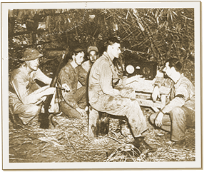

|
j
a v a s c r i p t |
April 4, 1942
Bataan communiqués have been impersonal, spartan, and terse — sometimes dull — with a purpose of not letting the enemy know how they are faring. The 0900 communiqué revealed a Japanese attempt to land by sea last night was repulsed with heavy losses. Artillery fire has been very heavy, and Japanese planes concentrated on Bataan, leaving Corregidor alone for the first time in 11 or 12 days — proof that an all-out offensive is on. In the past, the Japanese tried at least two sea landings at the height of their offensive, and failed. This time, they picked a perfect night: one or two days after the full moon. When the Corregidor cannons woke me at 0045, it was so bright that I thought it was dawn.

Bataan listening to the VoF broadcast from Corregidor's Malinta Tunnel
VoF longwave broadcasts have ceased, but I got them on shortwave with my GE despite terrific KZRH jamming. Tonight KGEI said the battle was seesawing back and forth, with the Japanese sustaining heavy losses but desperately attempting to wear out the USAFFE. Corregidor bombarded enemy concentrations on the south coast, which were probably about to embark for an assault by sea. All day today, groups of 8, 6 and 3 single-engine planes (we didn't see any heavy bombers) flew low over Manila on their way to Bataan. So the boys are being sorely tried and the climax is due in the next few days. This time, the Japanese have more planes, complete control of the skies, more and better-equipped men, more and heavier artillery. The USAFFE is certainly not better armed, assuming they have any ammunition left; are physically worn-out after months on short rations, and can expect no replacements. "Strictly confidential," I'm told, are reports that the USAFFE have suffered heavier casualties in the latest battles, particularly, the 14th U.S. Infantry and 2nd battalion Philippine Scouts. The reserves and other known USAFFE Filipinos at large are being told to prepare. My informant tells me they are to be at a certain place in Zambales on a certain date. The USAFFE will provide the plan and transportation. Just how, I don't know. The Japanese are taking no chances, shooting at anything and anyone on the slightest suspicion. USAFFE spies are having a hard time. Three groups of three each were operating as ordinary fishermen. The Japanese killed two of one group, and the lone survivor tipped off the others. I have no way of checking the above stories, but I'm skipping the rumors, which are too fantastic to mention. We had a discussion at the store about when the war would end. Aurelio Montinola said three years; Cu Ching Yan thought it would be months; Pacifico Ledesma tipped the end of the year. A Japanese officer told well-known lawyer, Manuel Lim, that he thought the USAFFE could be in Manila by July! Manolo Herman said that two Japanese friends admitted they couldn't win the war, let alone hold the P.I. "But before we leave, we're going to burn everything to the ground." |
|
|
|
|